The largest semi‑rigid airship in the world, bought from Italy, flown by the United States Army Air Service out of Langley Field — and lost in the worst American airship disaster to that date. It is the one airframe in the dossier that is unambiguously Air Force heritage, and what it caused is still in the regulations and still on the awards list today.
← the seven-airframe dossierAnswer this before anything else, because it is the first thing cadre will probe.
The Roma was operated by the United States Army Air Service, which is a direct organisational ancestor of the United States Air Force. The Air Force and the Army were a single service until 18 September 1947; the Air Force officially traces its own lineage back to 1 August 1907. An Air Service aircraft is Air Force heritage by the Air Force's own reckoning.
| Organisation | From | To |
|---|---|---|
| Aeronautical Division, U.S. Signal Corps | 1 Aug 1907 | 18 Jul 1914 |
| Aviation Section, U.S. Signal Corps | 18 Jul 1914 | 20 May 1918 |
| Division of Military Aeronautics | 20 May 1918 | 24 May 1918 |
| Air Service — Roma, 1921–22 | 24 May 1918 | 2 Jul 1926 |
| Air Corps | 2 Jul 1926 | 18 Sep 1947 |
| Army Air Forces | 20 Jun 1941 | 18 Sep 1947 |
| United States Air Force | 18 Sep 1947 | — |
So “Army Air Forces” is the name the air arm carried immediately before the 1947 split — but it is only the last of several. The sequence worth memorising is Signal Corps → Air Service → Air Corps → Army Air Forces → Air Force.
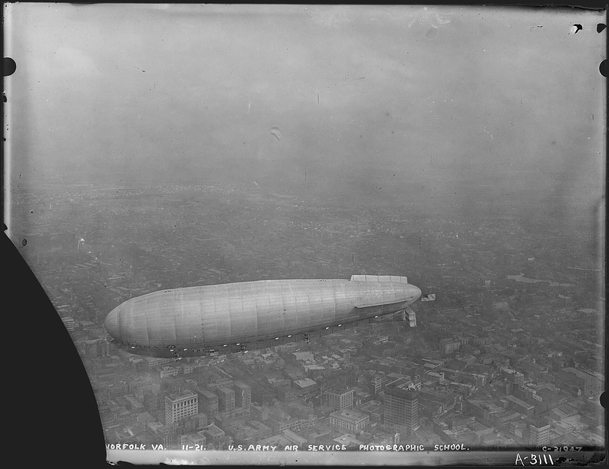
| Dossier entry | Operator | Air Force heritage? |
|---|---|---|
| 01 Sea Scout (SS) | Royal Naval Air Service / British RAF | No — British |
| 02 Roma | U.S. Army Air Service | YES |
| 03 Graf Zeppelin / Hindenburg | German, civil | No |
| 04 Akron / Macon | U.S. Navy | No |
| 05 L‑class / L‑8 | U.S. Navy | No |
| 06 K‑class | U.S. Navy | No |
| 07 ZPG‑2 / 2W / 3W | U.S. Navy | No |
Six of seven fail for the same reason: lighter‑than‑air was overwhelmingly a Navy mission. The Army ran its own airship program from 1908 until 1937, when the Air Corps shut it down and transferred everything remaining to the Navy. The Roma belongs to that Army program.
The U.S. Army's first powered aircraft was an airship, not an aeroplane. Signal Corps Dirigible No. 1 was accepted in 1908 — before the Army bought a Wright aeroplane. Under 20 mph, about two hours' endurance, tested at Fort Myer and Fort Omaha, scrapped in 1912.
So if a cadet asks why you are briefing a blimp in an Air Force program, the answer is that lighter‑than‑air is where Air Force aviation started.
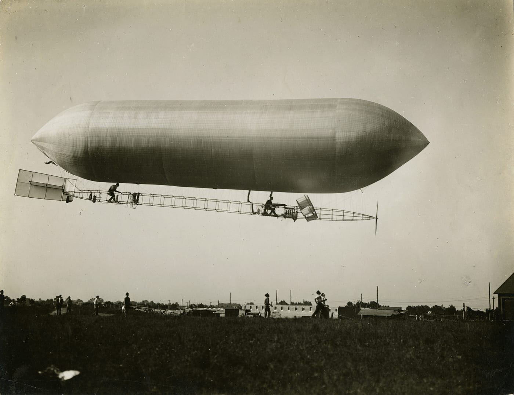
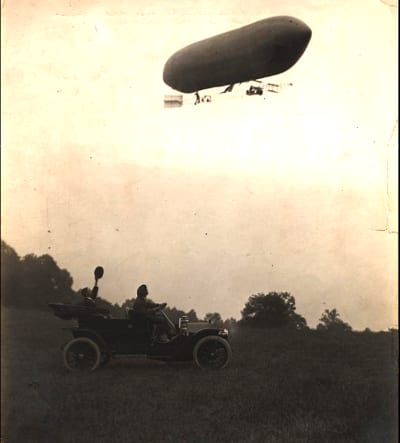
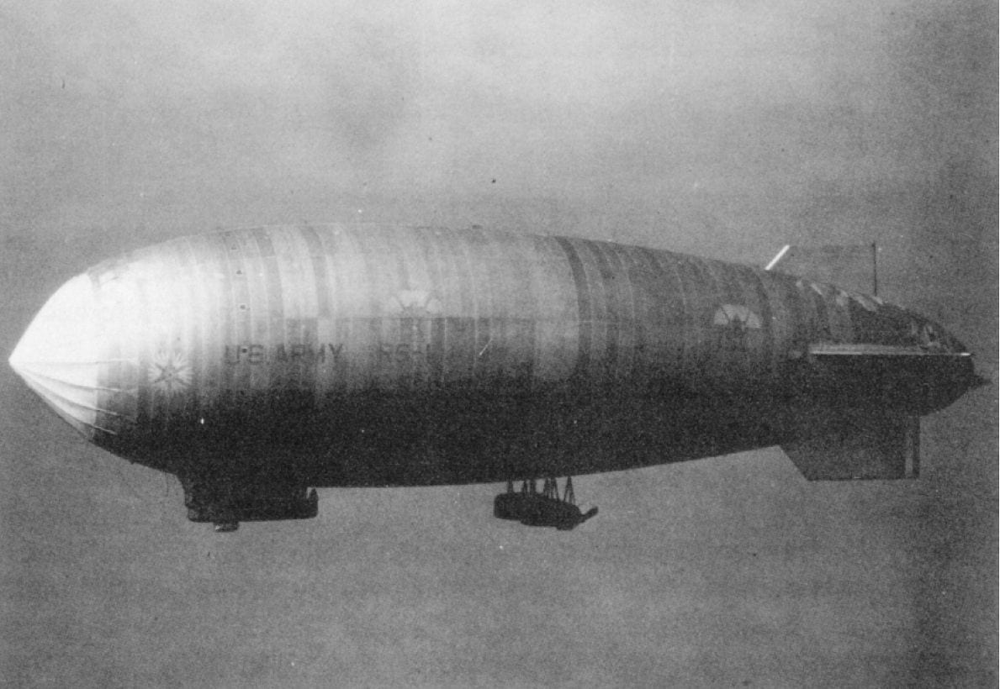
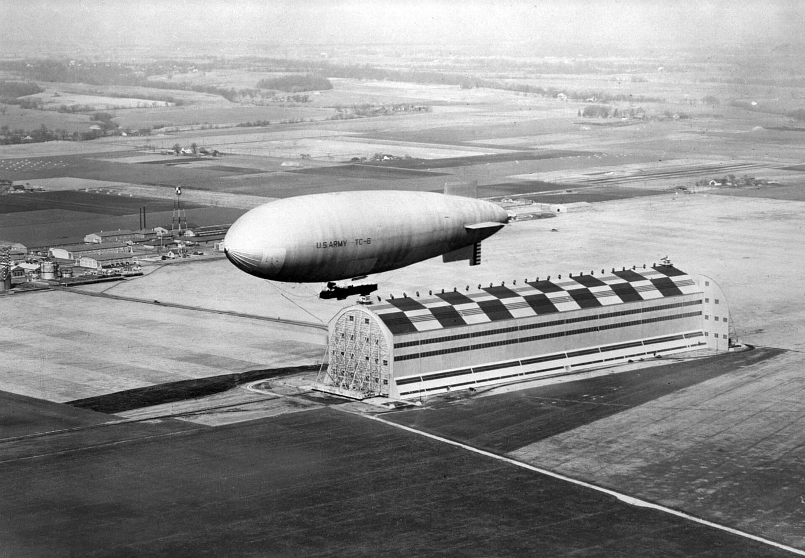
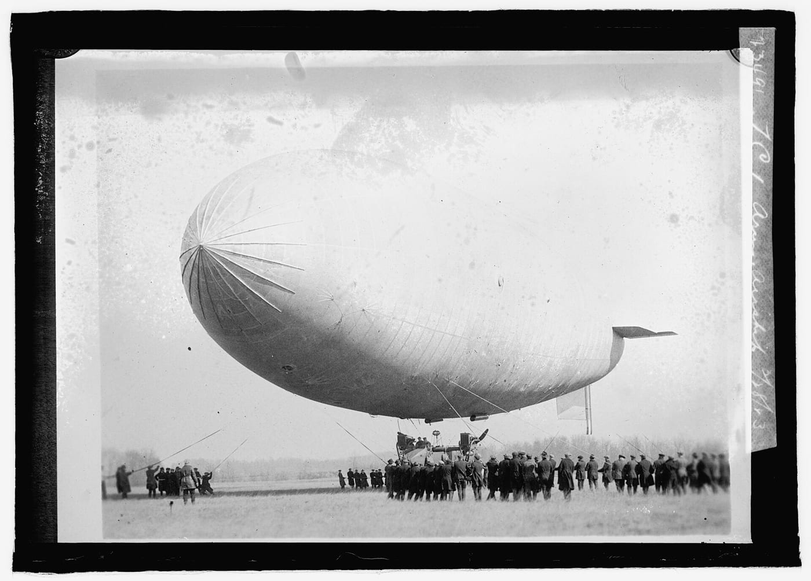
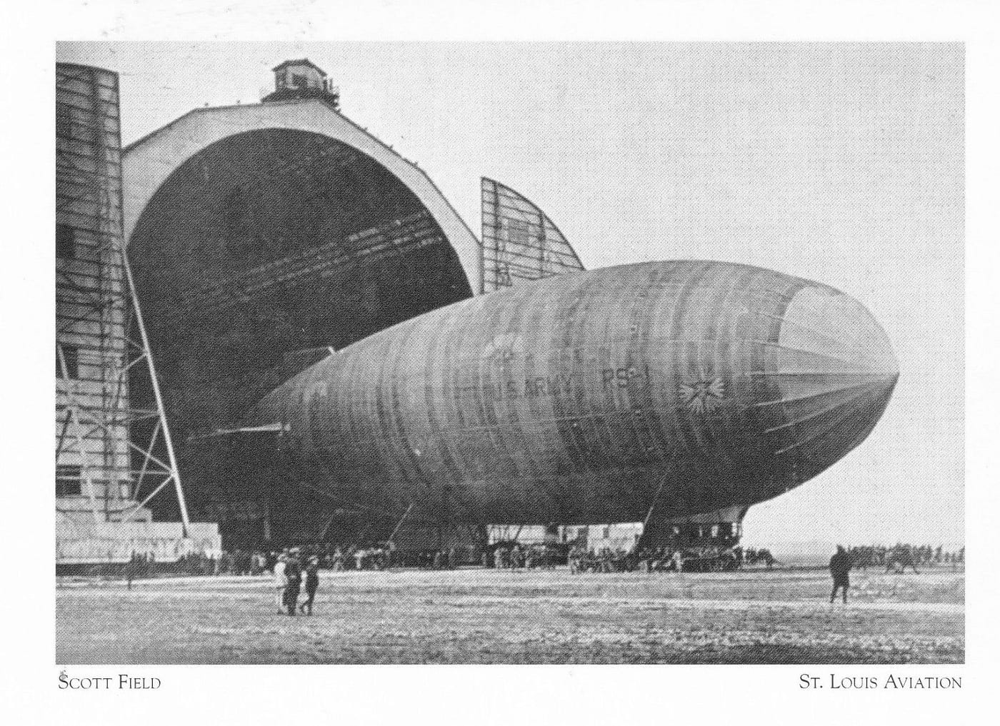
This is the technical heart of the brief, and it is the thing that makes Roma more interesting than a generic blimp: it is the middle of the three airship architectures, and you can explain all three in thirty seconds.
| Type | Structure | What holds its shape | Example |
|---|---|---|---|
| Non‑rigid (“blimp”) |
None at all | Gas pressure only. Deflate it and it is a tarp. | Navy K‑class; British SS |
| Semi‑rigid | A rigid keel along the bottom, nothing else | Gas pressure for the envelope; the keel carries loads and holds the line | Roma; Army RS‑1; Norge |
| Rigid (“Zeppelin”) |
Full metal framework, separate gas cells inside | The frame. It holds its shape with no gas at all. | Hindenburg; USS Akron |
On Roma the rigid keel ran the length of the underside and carried the control cabin and the crew spaces inside it — so there was no separate gondola dangling on wires. It was partially articulated, deliberately, so the hull could flex slightly rather than fight the gasbag.
That is the whole semi‑rigid bargain: more rigidity and a stronger structure than a blimp, far less weight and cost than a Zeppelin. It is also the architecture that failed on 21 February 1922 — see section 04.
Designed in Italy by a team led by Umberto Nobile, with Celestino Usuelli, Eugenio Prassone and Colonel Gaetano Crocco; built by Stabilimento Costruzioni Aeronautiche (SCA).
Nobile is worth a sentence, because it raises the stakes: four years after Roma he designed and piloted the semi‑rigid Norge, which in 1926 made the first verified flight over the North Pole with Roald Amundsen aboard. Roma was not a crank's project — it came from the leading semi‑rigid designer in the world.
| Length | 410 ft (125 m) |
|---|---|
| Diameter | 82 ft (25 m) |
| Height | 92 ft (28 m) |
| Gas volume | 1,193,000 ft³ (33,810 m³) |
| Lifting gas | Hydrogen |
| Empty weight | 34,000 lb (15,400 kg) |
| Max takeoff weight | 76,000 lb (34,500 kg) |
| Engines, as delivered | 6 × Ansaldo 4E‑2940 V‑12, 400 hp each |
| Engines, from Dec 1921 | 6 × Liberty L‑12 |
| Purchase price | $184,000 (≈$3.3M in 2025) |
| Operator | U.S. Army Air Service, Langley Field, Va. |
For scale against the other dossier entries: Roma's 1,193,000 ft³ is roughly seventeen times the volume of a British SS Zero's 70,000 ft³, and its six engines against the SS's one.
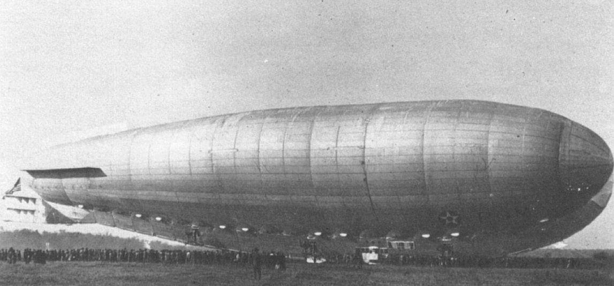
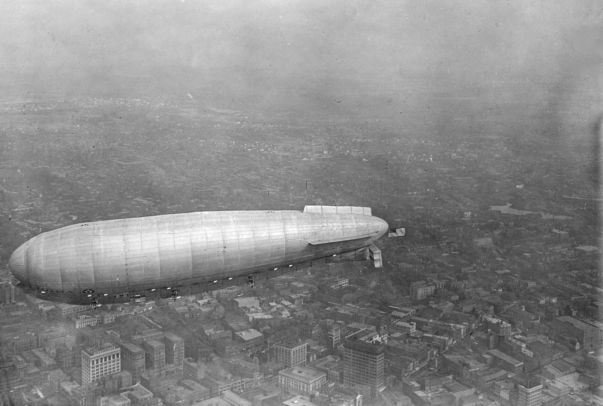
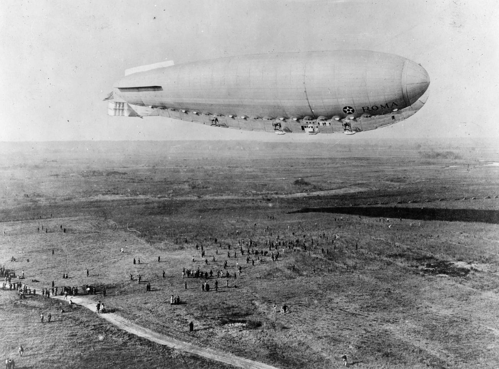
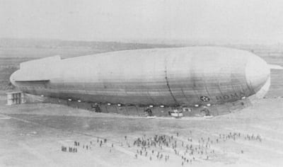
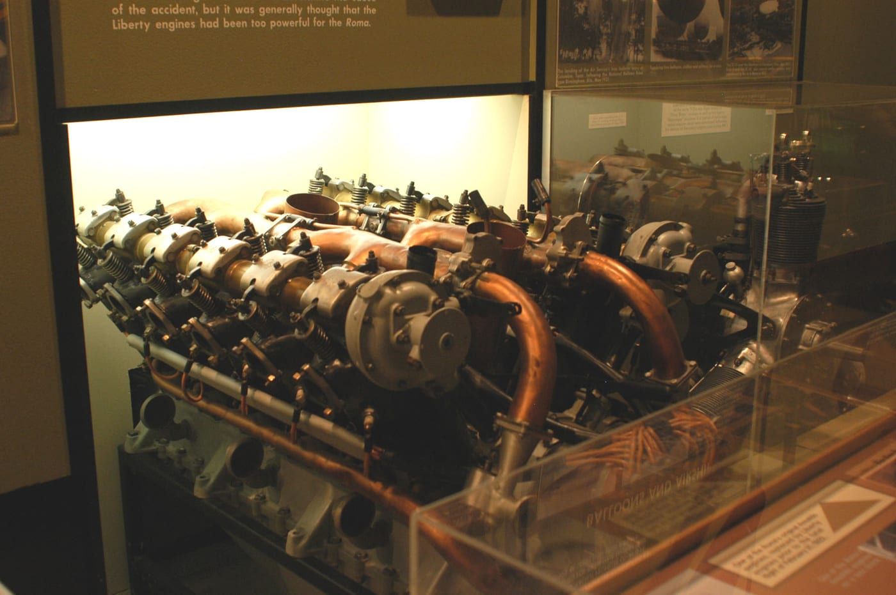
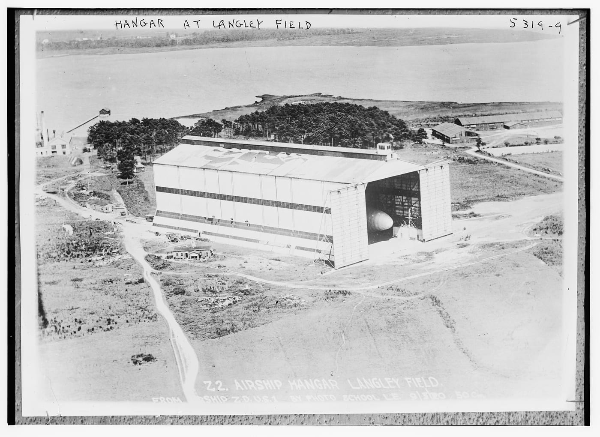
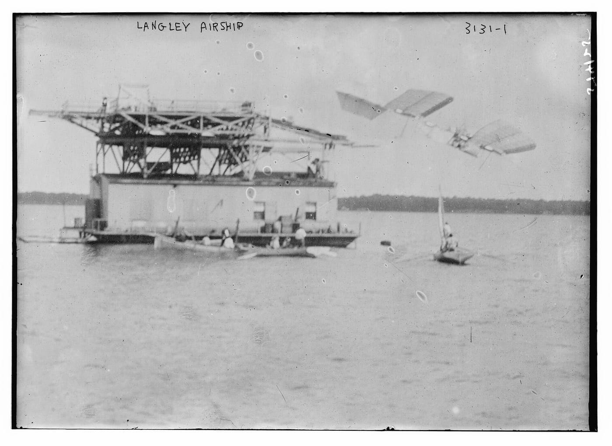
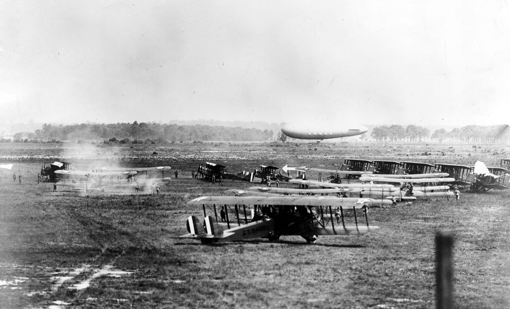
Roma's entire US career lasted 98 days. The sequence matters, because several of the problems that killed her were visible beforehand.
A mildewed cover, a propeller through the gasbag, and an engine swap the airframe was not designed for — then a test flight with the new engines carrying 45 people. Whatever the precise mechanical cause, that passenger manifest is the decision a modern safety officer would stop at. It is a legitimate point to raise in a brief, and it is the kind of observation that shows you did more than read a spec sheet.
Roma left Langley Field at 2:00 PM with 45 people aboard for the first flight on the new Liberty engines. She flew down the Chesapeake Bay shoreline — Buckroe Beach, Fort Monroe, Hampton Roads, Willoughby Spit — toward the Norfolk Navy Base.
At about 1,000 feet, over the Army's Norfolk Quartermaster Depot, the box rudder structure failed. Witnesses on the ground described seeing the entire box rudder slip sideways. The ship became uncontrollable in an instant and flew into the ground.
Just before the bow struck, Roma hit high‑voltage power lines. She was inflated with hydrogen. She burst into flames.
| Aboard | 45 |
|---|---|
| Killed | 34 |
| Injured | 8 |
| Escaped unharmed | 3 |
Among the dead was Captain Dale Mabry, the airship's commanding officer.
You will meet two accounts, and the honest move is to give both:
They are not wholly incompatible — both describe a structural failure of a semi‑rigid hull under load, which is the point that matters. What is not in dispute: the structure failed, she hit power lines, and the hydrogen is what turned a crash into a massacre. If you are asked for a single cause, say “structural failure of the control surfaces; the hydrogen is what made it unsurvivable” and note that accounts differ on the detail.
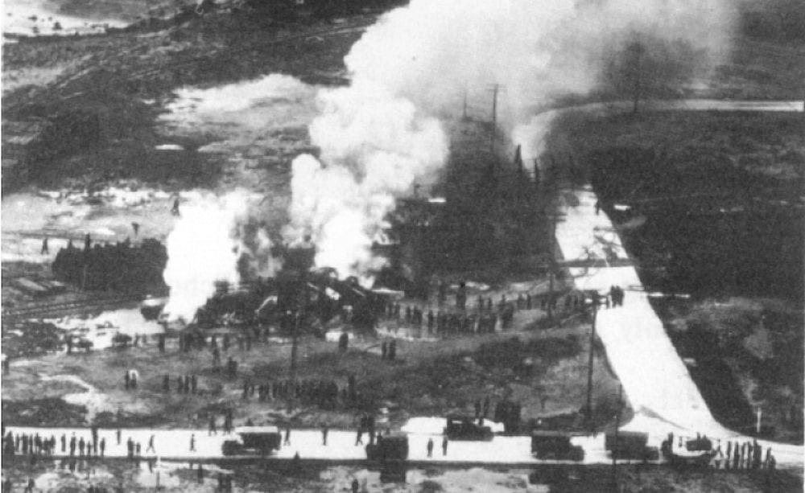
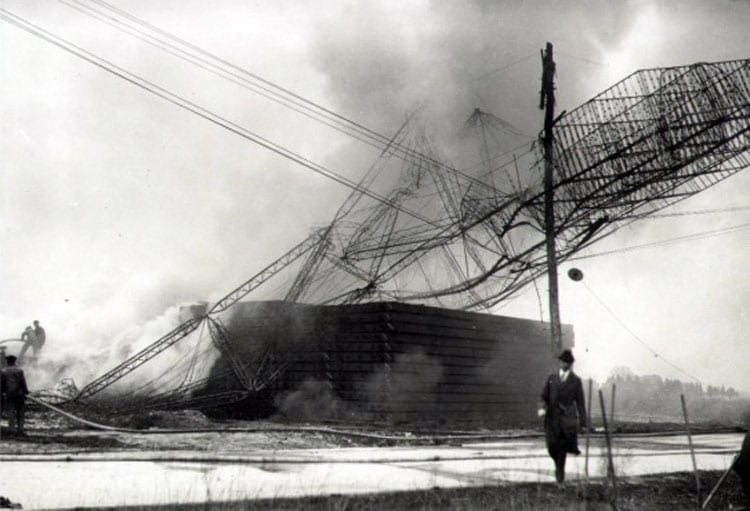
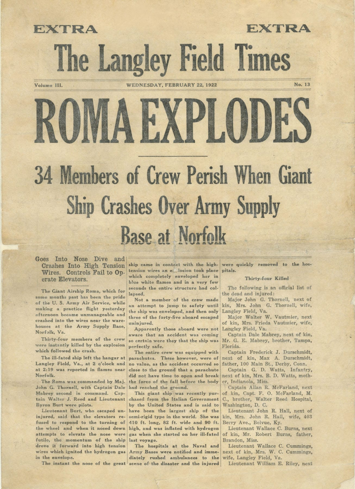
This is the strongest section of your brief, because the consequences are not historical trivia. Three of them are still live in today's Air Force.
Roma was the last hydrogen‑inflated airship ever flown by the United States military. Every subsequent US Army and Navy airship used non‑flammable helium. Congress acted on it.
This is why your dossier's other American entries — Akron, Macon, the L‑, K‑ and ZPG‑classes — are all helium ships. They are helium because of this crash. Roma is the hinge the rest of the dossier turns on.
And it is the sharpest possible contrast with entry 03: the United States banned hydrogen in its own airships in 1922 and then refused to export the helium alternative, which is precisely why the Hindenburg was still burning hydrogen fifteen years later.
Master Sergeant Harry A. Chapman went into the flames to pull his shipmates out. For that he became the first recipient of the Cheney Award, established in 1927 and presented to him by President Calvin Coolidge.
The Cheney Award is still an active United States Air Force award, given for “an act of valor, extreme fortitude or self‑sacrifice in a humanitarian interest, performed in connection with aircraft.” It is named for 1st Lt William H. Cheney, killed in a mid‑air collision over Foggia, Italy, in January 1918.
A living Air Force tradition begins at this airframe. That is as direct an answer to “why does this matter to us?” as you are going to get.
The Army Air Corps kept flying lighter‑than‑air for another fifteen years — the Goodyear RS‑1 semi‑rigid (ordered 1923, the first built in America, scrapped 1930) and a long run of TC‑class patrol blimps. In mid‑1937 the Air Corps shut the program down and transferred everything to the Navy; only TC‑13 and TC‑14 were judged serviceable enough to go.
That is why there are no Air Force airships today, and it is the clean closing line for the brief: the Air Force began in lighter‑than‑air and left it in 1937.
Yes. Operated by the U.S. Army Air Service, a direct ancestor of the USAF — Army and Air Force were one service until 18 September 1947, and the Air Force traces its lineage to 1 August 1907. The original negative of the Norfolk photograph is stamped “U.S. Army Air Service Photographic School.” It was based at Langley Field — now Langley AFB, where a road is named after it.
In order: Aeronautical Division, Signal Corps (1907) → Aviation Section, Signal Corps (1914) → Air Service (1918) → Air Corps (1926) → Army Air Forces (1941) → U.S. Air Force (18 Sep 1947). “Army Air Forces” is the immediate predecessor; Roma was Air Service.
Mostly yes — which is why six of the seven airframes in the main dossier are Navy. But the Army's very first powered aircraft was an airship, Signal Corps Dirigible No. 1 in 1908, before it bought an aeroplane. The Army ran coastal patrol and observation airships until 1937, when the Air Corps closed the program and handed the remaining ships to the Navy.
Three architectures: non‑rigid (no structure, gas pressure only — a blimp), rigid (full metal frame, holds shape empty — a Zeppelin), and semi‑rigid in between: a rigid keel along the bottom and nothing else. On Roma the keel ran the length of the ship and contained the control cabin and crew spaces, and it was deliberately articulated to flex. It matters because it was a structural failure that killed her.
A structural failure of the box rudder at about 1,000 ft — witnesses saw the whole assembly slip sideways and the ship became instantly uncontrollable. Some accounts instead describe a nose collapse at speed. Both describe a hull/control structure failing under load. She then struck high‑voltage power lines, and the hydrogen did the rest. 34 of 45 aboard died.
Helium was scarce, expensive and barely in production; hydrogen was cheap, plentiful and gives more lift. Roma was also an Italian ship designed around hydrogen and delivered that way. The crash ended the argument immediately: Roma was the last hydrogen airship the US military ever flew.
Not directly, and don't claim it did. But it is a legitimate contributing concern worth raising: 21 February 1922 was the first flight with the new Liberty L‑12s, swapped in that December for the unreliable Italian Ansaldos. A different engine installation on an airframe designed around another one, flown as a test with 45 people aboard — plus a cover already found mildewed on arrival and a propeller that had earlier torn through a gas bag. The pattern is what a safety officer would flag.
Three things, all still live:
410 ft long, 82 ft in diameter, 1,193,000 ft³ — the largest semi‑rigid airship in the world when the Army bought it. For scale, that is about seventeen times the gas volume of a British SS Zero patrol blimp, with six engines against one.
Umberto Nobile led the design team (with Usuelli, Prassone and Crocco) for Stabilimento Costruzioni Aeronautiche. Four years later Nobile designed and piloted the semi‑rigid Norge, which made the first verified flight over the North Pole in 1926 with Roald Amundsen aboard.
images/roma/CREDITS.md and
images/usaf-lta/CREDITS.md.